Random Forest#
Workflow Knime#
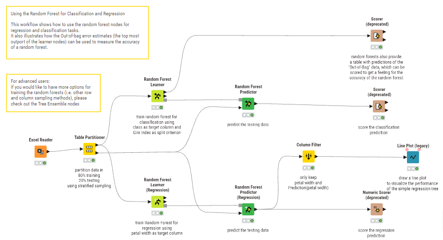
Input Data: Excel Reader#
Tahap pertama adalah memasukkan data mentah ke dalam KNIME. Node ini membaca file tugas-pohon.xlsx yang berisi histori data cuaca. Kita dapat melihat variabel seperti Outlook (cuaca), Temperature, Humidity, dan Windy. Target yang ingin kita tebak adalah kolom Play Tennis (Yes/No).
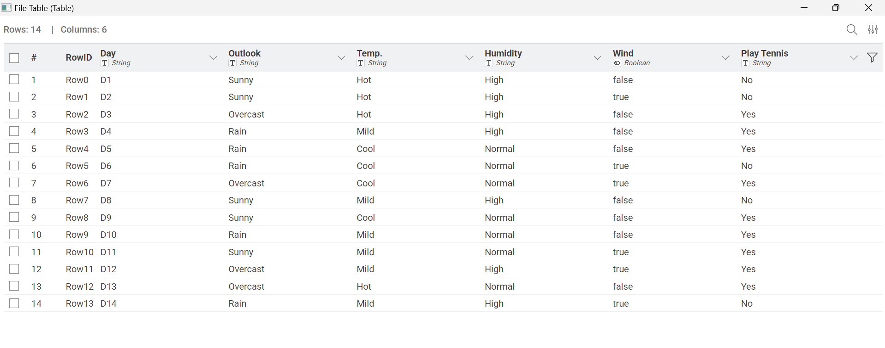
Pembagian Data: Table Partitioner#
Di sini kita mengatur pembagian data secara adil. Kita menggunakan proporsi 80% untuk data belajar dan 20% untuk data ujian.
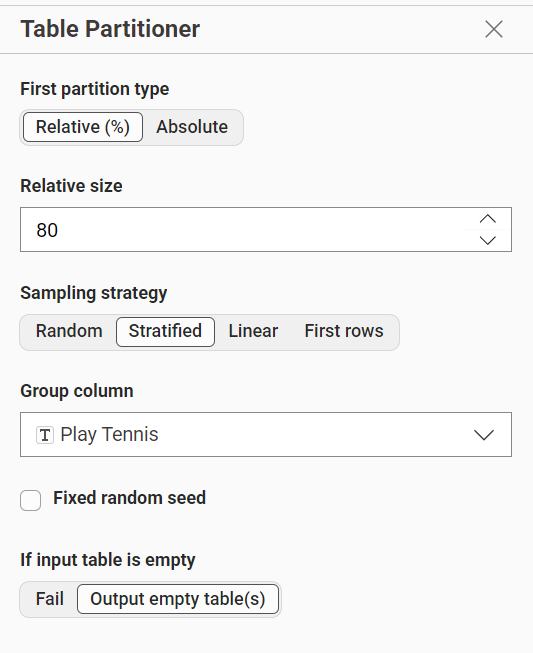
First Partition 80% :
Ini adalah data firsstpartition yang digunakan sebagai bahan belajar model.
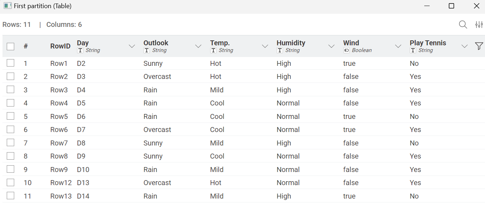
second Partition 20% :
Ini adalah data secondpartition yang disimpan untuk menguji keakuratan tebakan model nantinya.
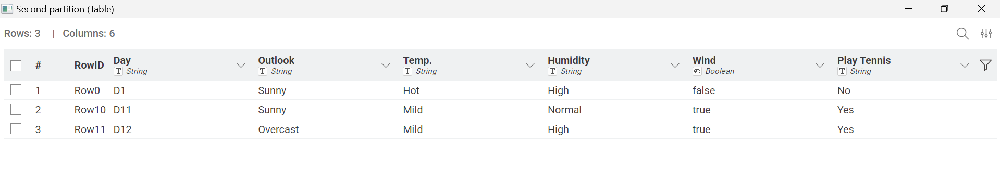
Proses Pembelajaran Model (Random Forest Learner)#
Pada tahap ini, sistem membangun “hutan” yang terdiri dari ratusan pohon keputusan untuk mempelajari pola dari data cuaca yang ada. Proses ini terbagi menjadi dua metode utama agar AI memiliki kemampuan prediksi yang lengkap:
Klasifikasi untuk Pengambilan Keputusan
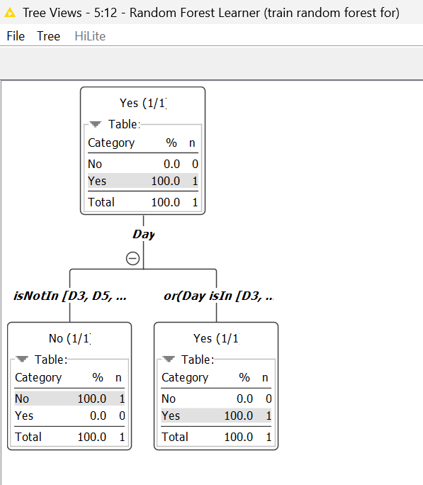
Jalur pertama adalah Klasifikasi, di mana model belajar untuk menentukan pilihan kategori. Seperti yang terlihat pada struktur pohon di atas, AI memecah data berdasarkan kondisi tertentu (misalnya kondisi hari) untuk menghasilkan jawaban akhir antara Yes (bermain tenis) atau No (tidak bermain). Fokus utama dari pohon ini adalah ketepatan dalam mengelompokkan data ke dalam label pilihan yang benar.
Regresi untuk Prediksi Nilai Presisi
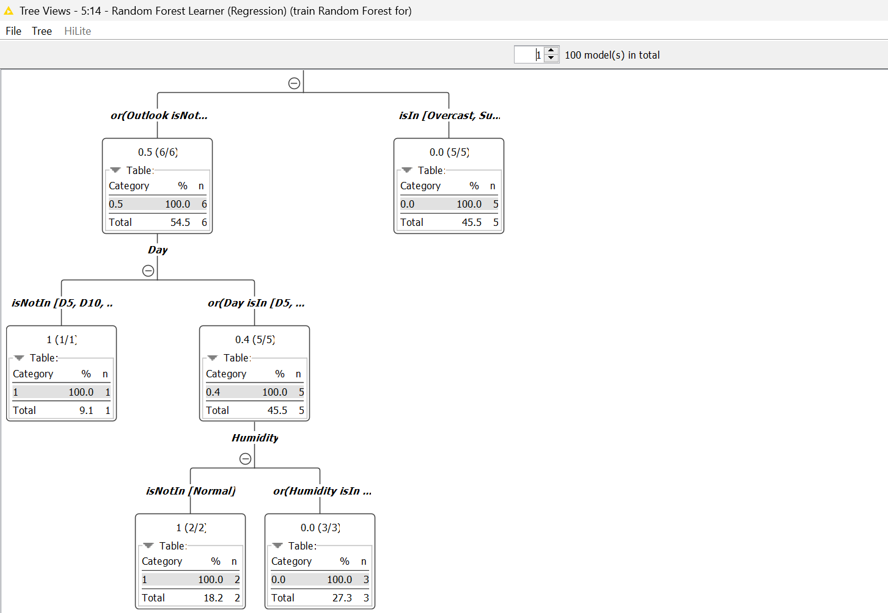
Jalur kedua adalah Regresi, yang dirancang untuk memprediksi nilai dalam bentuk angka desimal yang lebih detail. Struktur pohonnya terlihat lebih kompleks karena AI harus menghitung nilai rata-rata dan probabilitas statistik dari berbagai kombinasi variabel seperti suhu dan kelembapan. Berbeda dengan klasifikasi yang hanya memberikan label “Ya/Tidak”, pohon regresi ini memberikan hasil berupa angka numerik presisi terhadap target yang diprediksi.
Random Forest Predictor#
Pada bagian ini, model diuji untuk menebak kategori keputusan “Yes” atau “No” melalui node Random Forest Predictor. Gambar tersebut menunjukkan perbandingan langsung antara kolom Play Tennis sebagai data asli dengan kolom Prediction sebagai hasil tebakan AI. Selain memberikan jawaban kategori, model ini juga menampilkan Confidence Score atau tingkat keyakinan pada kolom paling kanan; misalnya pada baris ketiga, AI menebak “Yes” dengan kepastian 0.66. Hal ini membuktikan bahwa model tidak hanya sekadar memilih label, tetapi juga menghitung probabilitas statistik berdasarkan pola cuaca yang telah dipelajari sebelumnya untuk memastikan keakuratan prediksi.
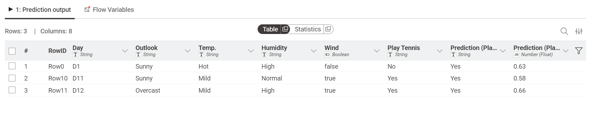
Random Forest Predictor - Regression#
Berbeda dengan jalur sebelumnya, bagian Regresi ini bertujuan untuk memprediksi nilai numerik yang bersifat kontinu. Melalui gambar ini, kita dapat melihat bahwa output yang dihasilkan oleh AI bukan lagi berupa label teks, melainkan angka desimal yang lebih presisi pada kolom Prediction. Proses regresi ini sangat penting untuk memahami sejauh mana model mampu memperkirakan nilai target dengan selisih angka yang sekecil mungkin dari data aslinya. Dengan melihat detail tabel ini, kita dapat mengevaluasi performa model melalui jarak antara angka kenyataan dan angka prediksi untuk menentukan tingkat kesalahan atau error estimasi yang dihasilkan oleh sistem.
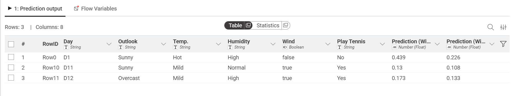
Column Filter (Penyaringan Data)#
Pada tahap ini, kita melakukan pemilihan kolom secara spesifik untuk memastikan hanya informasi yang relevan yang muncul dalam hasil akhir. Seperti yang terlihat pada gambar, kita memisahkan kolom ke dalam dua bagian:
Excludes (Kiri): Kolom-kolom yang tidak diperlukan atau mengandung data kosong (missing values) disingkirkan agar tidak membingungkan proses analisis.
Includes (Kanan): Kita hanya mempertahankan kolom utama seperti data cuaca (Outlook, Temp, Humidity) dan hasil prediksi (Prediction).
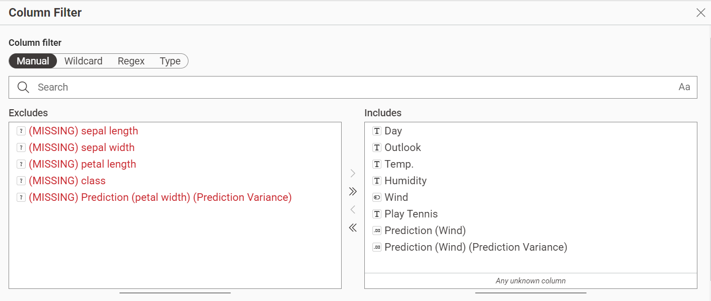
Scorer (deprecated)#
Node Scorer adalah alat evaluasi untuk mengukur seberapa akurat model AI dalam melakukan prediksi. Di dalam proyek ini, kita menggunakan dua Node Scorer untuk menguji dua aspek yang berbeda:
Pengujian Pertama
Pada pengujian pertama ini, kita menguji performa “Internal” model menggunakan metode Out-of-bag. Apa yang diuji? Kita membandingkan kolom data asli Play Tennis dengan kolom Play Tennis (Out-of-bag).
Maksudnya adalah: AI mencoba menebak data yang dia gunakan untuk latihan sendiri. Ini adalah tes awal untuk melihat seberapa baik AI memahami pola dasar tanpa melihat data luar.
Hasilnya: Akurasi 27.273%. Ini menunjukkan bahwa saat mencoba menebak datanya sendiri pun, AI masih banyak melakukan kesalahan karena pola datanya sangat acak.
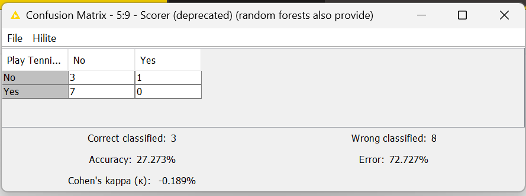
Pengujian Kedua
Pada pengujian kedua ini, kita menguji performa “Eksternal” model menggunakan Data Test. Apa yang diuji? Kita membandingkan kolom data asli Play Tennis dengan kolom Prediction (Play Tennis) yang dihasilkan oleh node Predictor.
Maksudnya adalah: Ini adalah “Ujian Final”. Kita memberikan data baru yang sudah dipisahkan (dari node Partitioning) untuk ditebak oleh AI. Kita ingin melihat apakah AI bisa menerapkan ilmu yang sudah dipelajari ke data yang benar-benar baru.
Hasilnya: Akurasi 66.667%. Ini menunjukkan peningkatan drastis! Artinya, AI jauh lebih jago menebak data baru yang dipisahkan secara rapi daripada menebak seluruh data sekaligus.
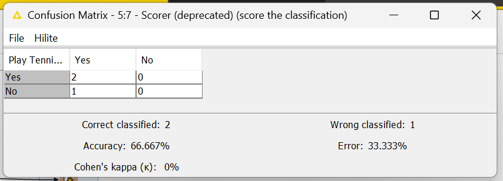
Line Plot (legacy)#
Grafik ini digunakan untuk melihat hasil kerja AI dalam bentuk garis agar lebih mudah dibaca dibandingkan hanya melihat angka di dalam tabel.
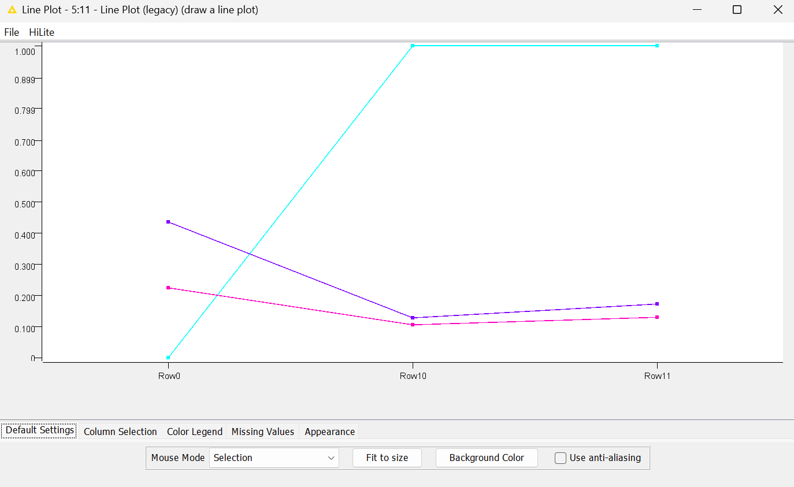
Pada gambar diatas membandingkan Data Asli dengan Hasil Tebakan AI. Tujuannya untuk melihat seberapa mirip tebakan AI dengan kenyataan yang ada.
Penjelasan Hasil:
Garis Naik-Turun: Menunjukkan perubahan kondisi data (misalnya perubahan suhu atau kecepatan angin).
Ketepatan: Semakin dekat jarak antara garis yang satu dengan yang lain, artinya tebakan AI kita semakin akurat dan mendekati kenyataan.
Numeric Scorer (deprecated)#
Jika pada klasifikasi kita mencari akurasi, pada jalur Regresi kita menggunakan node Numeric Scorer untuk mengukur seberapa jauh selisih antara angka yang ditebak AI dengan angka kenyataan di lapangan.
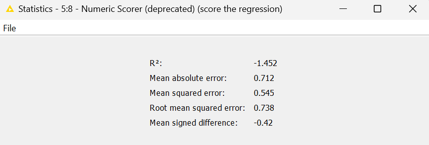
Disini menguji ketepatan prediksi angka (seperti memprediksi kecepatan angin atau suhu). AI diukur berdasarkan “jarak” kesalahannya. Semakin kecil nilai error-nya, semakin hebat AI tersebut.
Penjelasan Hasil Statistik:
Mean Absolute Error (0.712): Ini adalah rata-rata kesalahan AI. Artinya, setiap kali AI menebak angka, tebakannya meleset sekitar 0.7. Semakin mendekati angka 0, maka tebakan AI semakin sempurna.
Root Mean Squared Error (0.738): Ini juga ukuran kesalahan yang memberikan bobot lebih besar pada kesalahan yang fatal. Nilai 0.7 menunjukkan bahwa kesalahan AI masih dalam batas yang cukup wajar.
\(R^2\) (-1.452): Nilai ini menunjukkan seberapa cocok model kita dengan data. Jika nilainya minus, itu tandanya model regresi kita masih perlu diperbaiki lagi agar bisa mengikuti pola data dengan lebih baik.